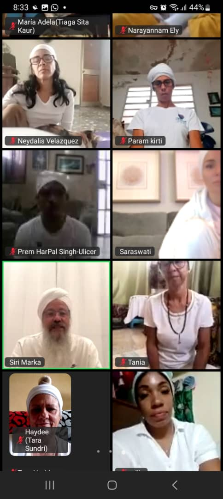

"Llevar 6 meses practicando sadhana online ha cambiado completamente mi vida. Ahora tengo una disciplina que nunca creí posible y me siento conectada con algo más grande."

Sadhanas Online
Práctica Espiritual Diaria Virtual
🌅 Cada día al amanecer, unidos en la luz
Práctica Diaria
Comunidad Virtual
Transformación
¿Qué es la Sadhana?
La práctica espiritual más poderosa para despertar tu conciencia cada amanecer
La Sadhana es una práctica espiritual diaria que se realiza en las horas ambrosiales antes del amanecer, cuando la energía de la Tierra está más calmada y receptiva. En ACIKY, nos conectamos virtualmente cada mañana para crear una poderosa onda de conciencia que se extiende por toda Cuba y más allá. Es un momento sagrado donde nos unimos como comunidad espiritual, independientemente de nuestra ubicación física.
Horas Ambrosiales
Practicamos entre las 4:00 y 7:00 AM, aprovechando la energía más pura y silenciosa del día para la meditación profunda.
Conexión Virtual
A través de plataformas digitales, creamos un círculo sagrado que trasciende las distancias físicas y une corazones.
Práctica Estructurada
Seguimos la secuencia tradicional: apertura, pranayama, mantras, meditación y cierre con oración.
Transformación Gradual
La constancia diaria genera cambios profundos en la conciencia, creando nuevos patrones de pensamiento y ser.
Nuestro Horario Diario
Programa semanal de sadhanas online para diferentes necesidades y niveles
Lunes a Viernes
6:00 AM - 7:00 AM
Sadhana Matutina Completa
Práctica completa de 60 minutos para empezar la semana laboral con energía elevada.
• Apertura y protección
• Yoga Tune-up (ejercicios de calentamiento)
• Pranayama (respiración consciente)
• Kriya específica del día
• Meditación profunda
• Mantras de cierre
Guiada por: Instructores rotatorios ACIKY
Sábados
6:30 AM - 8:00 AM
Sadhana Extendida de Fin de Semana
Práctica más profunda de 90 minutos para quienes tienen más tiempo los fines de semana.
• Práctica completa weekday
• Kriya adicional temática
• Meditación silenciosa extendida
• Canto de mantras grupales
• Tiempo para reflexión personal
• Cierre con intenciones semanales
Guiada por: Maestros senior ACIKY
Domingos
7:00 AM - 7:45 AM
Sadhana de Gratitud y Renovación
Práctica especial de 45 minutos enfocada en gratitud y preparación para la nueva semana.
• Meditación de gratitud
• Pranayama suave y restaurativo
• Mantras de abundancia
• Kriya para la prosperidad
• Visualización de la semana
• Bendiciones grupales
Guiada por: Comunidad rotativa
Beneficios de la Práctica Diaria
Transformaciones que experimenta quien mantiene la disciplina de la sadhana
🧠 Claridad Mental
La mente se vuelve más clara, enfocada y capaz de tomar decisiones desde la sabiduría interior.
⚡ Energía Elevada
Empiezas cada día con vitalidad renovada y una frecuencia energética más alta y estable.
🕯️ Conexión Espiritual
Desarrollas una relación íntima y constante con tu ser superior y la divinidad universal.
💎 Disciplina Interna
Cultivas la fuerza de voluntad y la autodisciplina que se extiende a todas las áreas de tu vida.
🌊 Estabilidad Emocional
Las emociones se equilibran, desarrollando mayor resistencia al estrés y reactividad emocional.
🤝 Comunidad Sagrada
Formas vínculos profundos con otros practicantes comprometidos con el crecimiento espiritual.
🎯 Propósito Claro
Te conectas diariamente con tu propósito de vida y misión espiritual en el mundo.
🌟 Manifestación Poderosa
Desarrollas la capacidad de materializar tus intenciones más elevadas con mayor facilidad.
¿Cómo Unirte a las Sadhanas Online?
Pasos simples para formar parte de nuestra comunidad de práctica diaria
1
Regístrate en Nuestra Plataforma
Contáctanos para recibir los enlaces de acceso a las sesiones diarias y unirte a nuestro grupo de practicantes.
2
Prepara tu Espacio Sagrado
Crea un lugar tranquilo en tu hogar, con una manta, vela o cualquier elemento que te ayude a concentrarte.
3
Ajusta tu Rutina de Sueño
Gradualmente ajusta tu horario para despertar temprano. Acuéstate más temprano para mantener las horas de descanso.
4
Comienza con Compromiso
Comprométete inicialmente por 40 días seguidos para establecer el hábito y experimentar los beneficios completos.
Temas Mensuales de Sadhana
Cada mes exploramos aspectos específicos del crecimiento espiritual
Enero
Nuevos Comienzos
Kriyas para establecer intenciones claras y crear momentum espiritual para el año.
Enfoque: Manifestación y Visión
Febrero
Amor y Compasión
Prácticas para abrir el corazón y desarrollar amor incondicional hacia uno mismo y otros.
Enfoque: Chakra del Corazón
Marzo
Poder Personal
Kriyas para desarrollar la confianza, coraje y fuerza interior necesarios para la acción.
Enfoque: Chakra del Plexo Solar
Abril
Renovación y Renacimiento
Prácticas de limpieza energética y renovación espiritual alineadas con la primavera.
Enfoque: Purificación
Mayo
Creatividad y Expresión
Desbloqueando la creatividad sagrada y encontrando formas auténticas de expresión.
Enfoque: Chakra Sacral
Junio
Comunicación Consciente
Desarrollando la capacidad de hablar nuestra verdad con amor y claridad.
Enfoque: Chakra de la Garganta
Experiencias de Nuestra Comunidad
Testimonios de practicantes regulares de sadhana online
"Al principio era difícil levantarme tan temprano, pero ahora es mi momento favorito del día. La energia que obtengo en la sadhana me acompaña todo el día."
"La comunidad virtual es increíble. Aunque estamos físicamente separados, siento una conexión profunda con todos los que practicamos juntos cada mañana."
"He logrado superar problemas de ansiedad que tenía hace años. La práctica diaria me ha dado herramientas para mantener la calma en cualquier situación."
Consejos para una Práctica Exitosa
Recomendaciones de instructores experimentados para mantener la disciplina
🛏️ Preparación Nocturna
Deja la ropa lista, prepara el espacio de práctica y pon el despertador lejos de la cama para evitar quedarte dormido.
💧 Hidratación Temprana
Bebe un vaso de agua al despertar para activar el sistema y luego espera 15 minutos antes de la práctica.
🎯 Comienza Gradualmente
Si eres nuevo, únete primero a las sesiones de domingo, luego agrega más días progresivamente.
📱 Modo Avión
Pon el teléfono en modo avión excepto para la videollamada, eliminando distracciones innecesarias.
🕯️ Crear Atmósfera
Enciende una vela, usa aceites esenciales o coloca crystales para crear un ambiente sagrado.
🤝 Compañero de Práctica
Encuentra un amigo que también practique para motivarse mutuamente y mantener la responsabilidad.
Únete a Nuestras Sadhanas Online
¿Listo para comenzar tu práctica espiritual diaria?
Información y Registro
Para unirte a nuestras sadhanas online diarias y recibir los enlaces de acceso:
Escríbenos para recibir enlaces diarios
Únete a nuestro grupo de WhatsApp
Comienza mañana mismo tu transformación
"Si quieres aprender algo, léelo. Si quieres entender algo, escríbelo. Si quieres dominar algo, enséñalo. Si quieres experimentar algo, practícalo todos los días."
— Sabiduría de la Práctica Diaria